Korail Talk
A redesign that helps first-time visitors to Korea book train tickets on their own — search places, not station names.

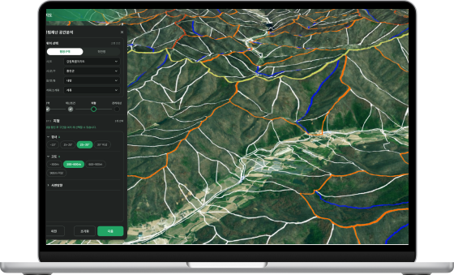
Complex spatial data, clearly
An upgrade of a forest watershed digital-map platform for the Korea Forest Conservation Association. I designed its forest-disaster spatial analysis so that non-experts can reach results just by choosing conditions — complex GIS analysis turned into a step-by-step flow.
View Screens1-1. Background
The existing service assumed analysis experts: users had to know which data and technique to use first, and features were split by analysis technique. The new direction was simple — anyone should be able to find analysis results for the area they care about, even without spatial-analysis knowledge.
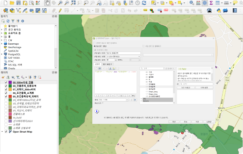
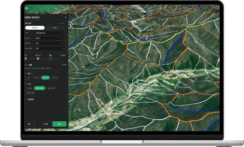
DESIGNER’S NOTE
This was a development project with three developers rather than a research-led UX project. Keeping in constant contact with the client and aligning features with developers, I ran short loops of design → align → refine.
2-1. Requirements Review
Meeting notes listed overlay, distance, buffer and multi-condition analysis plus attribute-table lookup. Through meetings with the client, I confirmed that the real users were forest-agency staff unfamiliar with spatial analysis — so I ordered the screens for people who need to find management targets, not for people who know analysis techniques.
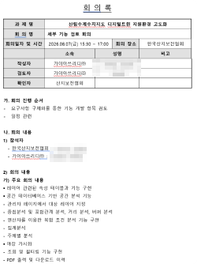
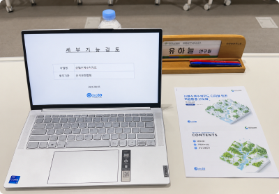
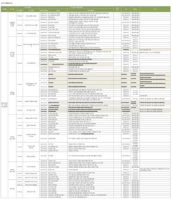
2-2. Three Concepts
Grouping the requests by what users actually needed to do gave every screen a shared standard.
Users begin with what they care about — landslides, wildfires, pests — not with an analysis technique.
Conditions are split into clear steps, so anyone can move forward without GIS terms.
The flow doesn’t stop at a map; it leads all the way to the areas that need attention.
3-1. Screen Design & Functional Spec
I translated each requirement into a screen design spec for the client and a functional spec for the developers, alongside the WBS and requirements analysis, so the client and the team looked in the same direction.
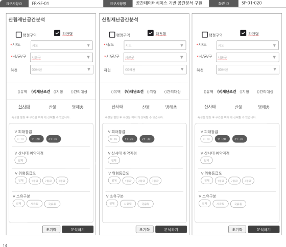
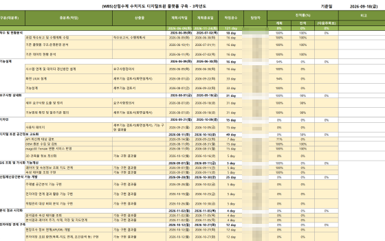
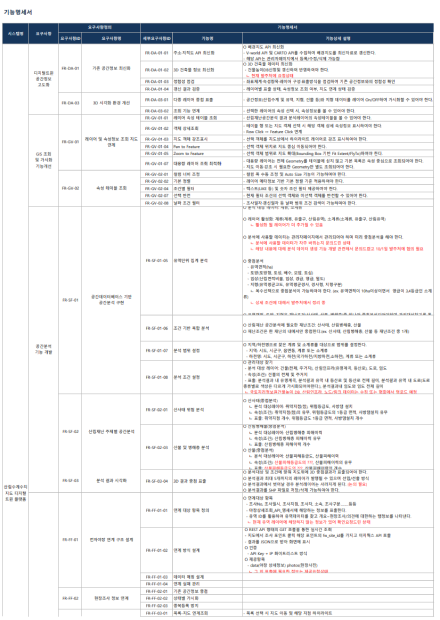
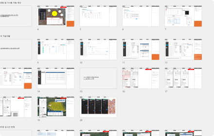
3-2. Align with Developers & Client
I checked each screen-spec item against the actual API responses. Conditions the spec couldn’t tell — such as API keys and client IP allowlists — I verified by sending real requests, then fed the results back into the screens. For example, when photo descriptions weren’t provided, we agreed to show the capture date and site coordinates instead.
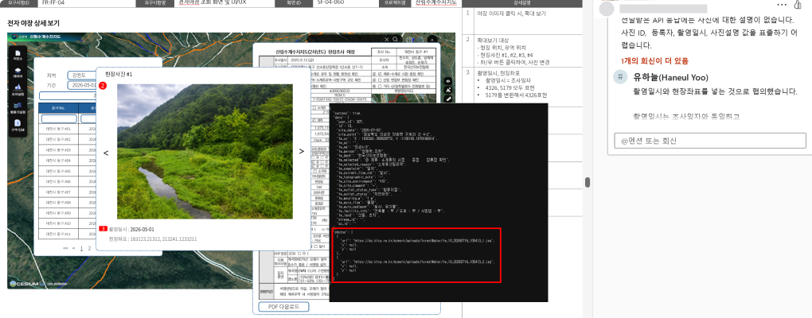
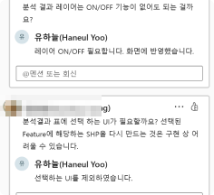
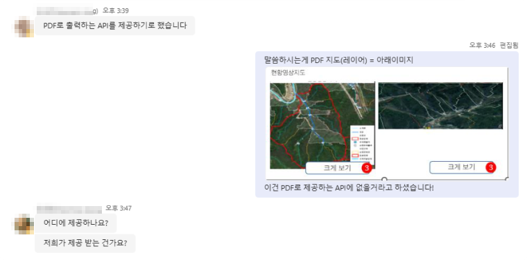
3-3. Design System & Prototype
I organized colors, typography and components with Figma Variables, and connected the main analysis flows into a prototype to review with the client and developers.
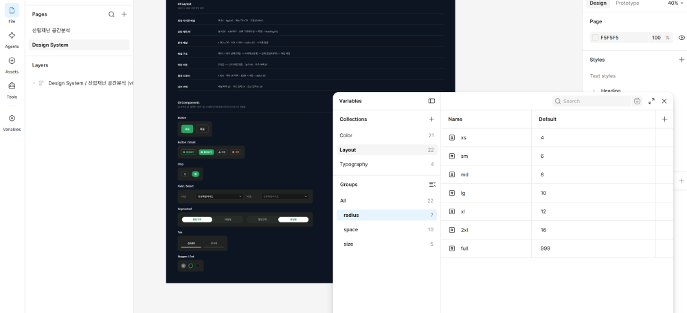
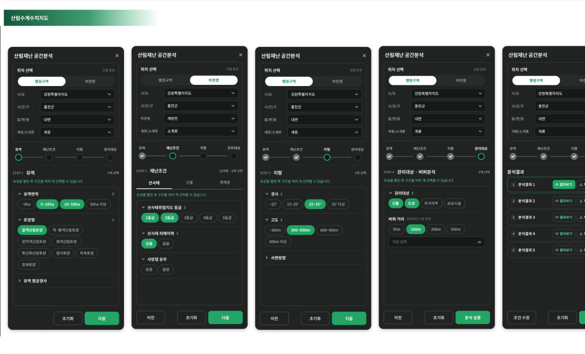
4-1. AS-IS → TO-BE
The previous tool required typing formulas and bringing your own data. The new panel fixes the analysis scope and breaks conditions into steps, so users pick chips instead of attribute names.
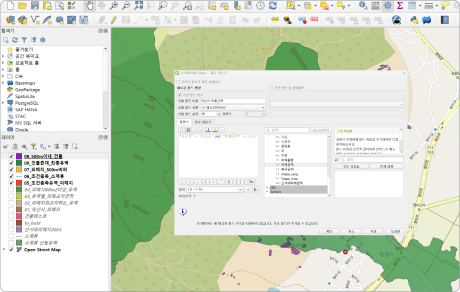
4-2. Result Screen
Spatial data is huge and heavy. Considering the PC specs of non-expert users, I proposed keeping up to five analysis results at a time.
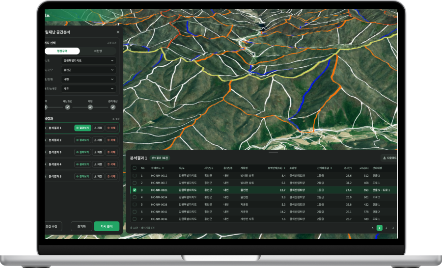
4-3. High-fidelity Design
Choose conditions → find management targets → view the attribute table, all within one panel. The analysis scope stays fixed and the conditions are split into four steps, so users reach results without scrolling.
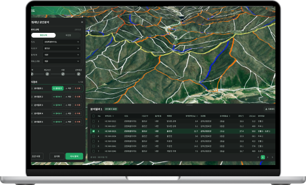
By defining the end user first, I could propose a service that fits them and set the main design flow and direction.
I haven’t been able to run user testing yet. Development and discussions continue until the final report, so the design hasn’t been validated in real use.
Development is in progress. I’ll keep comparing the implementation with the design, refine the result UI with the team, and bring every change back into the screens.
A redesign that helps first-time visitors to Korea book train tickets on their own — search places, not station names.
People check their health data often, but don’t always understand what the numbers mean. Heart Path translates heart data into meaning and clear next steps.